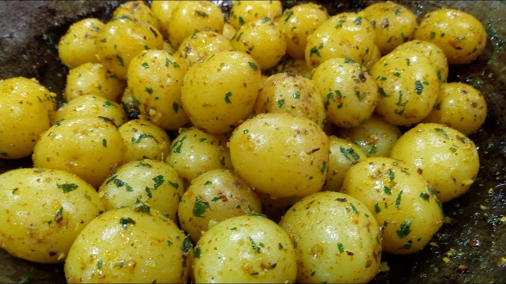

Pão de forma recheado com refogado de frango, coberto com purê de batatas e batata palha

Batata em molho tipo conserva (sensação nas festas de casamento dos anos 80)

Sobremesa à base de leite de côco, leite e amido de milho, coberto com calda de açúcar e ameixas secas

Sobremesa feita com gelatina de diversas cores